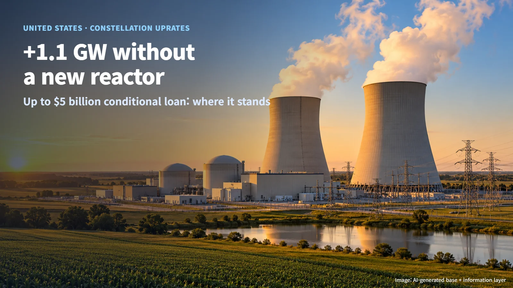
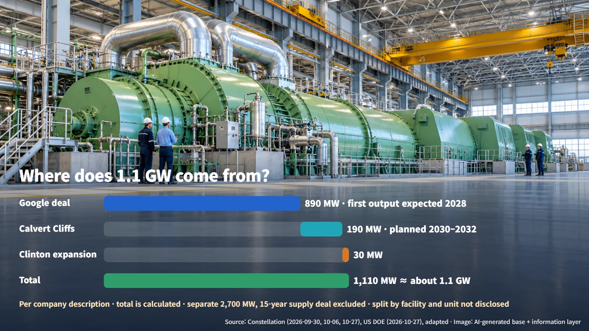
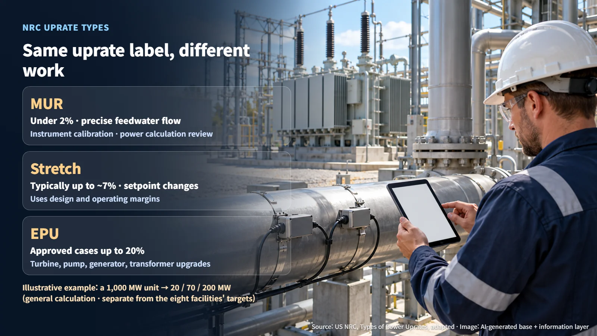
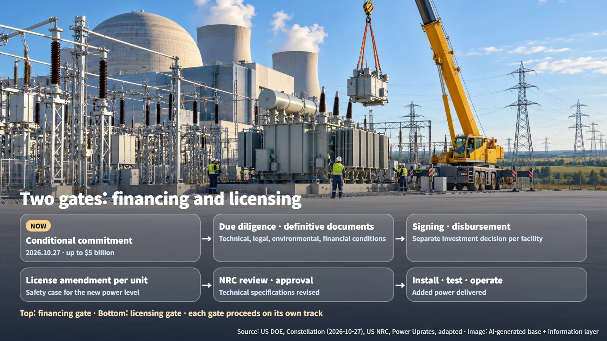

United States · Uprates & Finance
$5 Billion for 1.1 GW Without a New Reactor: Where Constellation's Uprate Loan Stands
DOE's conditional commitment of up to $5 billion targets about 1.1 GW of uprates at eight Constellation plants, with funds and added power still to pass financing and NRC licensing steps.
Adding 1.1 GW of electricity without building a single new reactor sounds almost too neat, and many readers will wonder how it works. In early October this site looked at Google and Constellation's 890 MW uprate agreement ("How an AI Company Buys Nuclear Power: Reading Google's 890 MW Uprate Deal"). This post follows the money that is meant to pay for that kind of work: how large the financing is, and when it actually reaches the projects.

1.1 GW Without a New Plant: What the Uprate Loan Covers
On October 27, 2026, the U.S. Department of Energy (DOE) announced a conditional loan commitment of up to $5 billion for power uprates and modernization at Constellation's existing nuclear plants. A conditional loan commitment is a promise to lend once a defined set of conditions has been met.
Eight facilities are covered. In Illinois: Braidwood, Byron, Clinton, Dresden, LaSalle and Quad Cities. In Maryland: Calvert Cliffs. In Pennsylvania: Limerick. The commitment also includes an option to finance future uprates at other Constellation facilities.
A power uprate is the process of raising the maximum power level a reactor is licensed to operate at. Instead of building on a new site, it expands the generating capability of equipment that is already in place. DOE said the planned improvements could add about 1.1 GW of generating capacity, aimed at electricity demand and grid reliability in the PJM and MISO regions (the grid operators covering much of the eastern and midwestern United States). The announcement marks the conditional commitment stage of the financing; the added power arrives once each unit has completed its licensing and construction work.
Where Does 1.1 GW Come From? 890 + 190 + 30
Constellation described roughly 1,080 MW tied to its Google and Amazon agreements, together with a 30 MW expansion plan at Clinton.
- Google agreement (announced October 6): capital investment at 11 units for 890 MW of new capacity, with the first uprate output expected in 2028
- Amazon agreement at Calvert Cliffs (announced September 30): 190 MW of additional capacity planned for delivery in 2030–2032
- Clinton expansion plan: 30 MW
Adding 890 + 190 = 1,080 MW and then Clinton's 30 MW gives 1,110 MW, which works out to about 1.1 GW — the same scale as the added capacity DOE cited. The Google deal also includes a separate 2,700 MW, 15-year energy supply agreement; this calculation counts only the 890 MW of new capacity.
Laying the two scopes side by side also shows where they differ. The Google agreement's six sites are in Illinois, Pennsylvania and New Jersey, while the eight DOE-supported facilities span Illinois, Maryland and Pennsylvania. The sum therefore confirms that the overall scale lines up; the split by facility and unit has not been disclosed. The key takeaway from these numbers is that the loan is linked to power purchase agreements that are already signed. The financing attaches to uprate capacity that already has a buyer.

Same Uprate Label, Different Work: MUR, Stretch and EPU
The U.S. Nuclear Regulatory Commission (NRC) groups power uprates into three types.
- Measurement uncertainty recapture (MUR): less than 2%. More precise measurement of feedwater flow (the water entering the reactor) reduces the uncertainty in the reactor power calculation. It is a bit like a more accurate scale letting you trim the margin you kept in reserve for measurement error.
- Stretch uprate: typically up to about 7%. It usually involves changing instrument setpoints without major equipment modifications, and the achievable amount depends on each plant's design and operating margins.
- Extended power uprate (EPU): the NRC's overview notes approved cases of up to 20%, with major modifications to equipment such as high-pressure turbines, condensate pumps, motors, generators and transformers.
As an illustrative example, for a 1,000 MW unit: 1,000 × 2% = 20 MW, 1,000 × 7% = 70 MW, and 1,000 × 20% = 200 MW. These percentages show the range of past approvals as a general example; the uprate size at each of the eight facilities will be set in unit-by-unit plans.
The type of uprate determines the kind of work involved. Even for the same number of megawatts, an MUR centers on instrument calibration and a review of the power calculation, while an EPU puts much of its weight on manufacturing and installing large components such as turbines and generators. That is why the method chosen for each unit is the first clue to the scale and schedule of the work.

Before the Money Flows: The Financing Gate and the Licensing Gate
Reaching actual construction and operation at the new power level means passing through two gates in parallel.
The financing gate begins with the conditional commitment, then moves through completion of due diligence, negotiation of definitive financing documents and satisfaction of technical, legal, environmental and financial conditions, before final financing documents are signed and funds are disbursed. Constellation said it will make a separate final investment decision for each facility. In its general program description, DOE offers financing for up to 80% of eligible project costs; the coverage ratio, interest rate, collateral and drawdown schedule for this loan will be set in the separate financing agreement.
The licensing gate runs from a license amendment request for each unit, through NRC safety evaluation and approval and revision of the technical specifications (the license document that sets operating conditions), to equipment installation and testing, and finally operation at the new power level. Because licensed power is an input to many safety analyses, raising it requires safety documentation that reflects the new power level and an approved license document.

The loan commitment has opened a path for the funding, and the timing of the added power will be set by licensing approvals and outage work schedules. The next items to watch are the signing of final financing agreements and the release of unit-by-unit uprate amounts, license applications and outage schedules. On the current timeline, the first uprate output under the Google agreement is expected in 2028, and the Calvert Cliffs uprate is planned for delivery in 2030–2032.
Behind the 1.1 GW figure is a long project schedule in which contracts, financing and safety review move together. The work of drawing more out of existing nuclear plants is now advancing along that schedule, one step at a time.